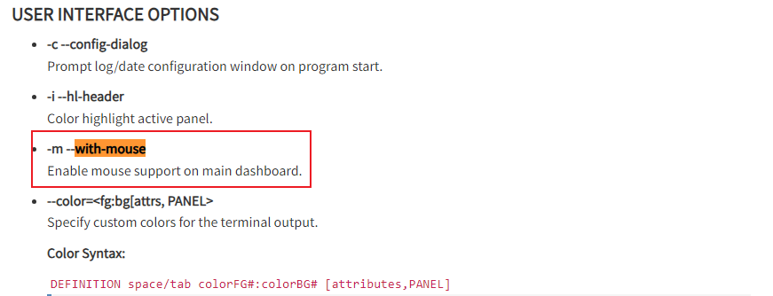

1. 爬虫识别，从此天下再无真假李逵！

致读者: 点击上方 “雪之梦技术驿站” → 点击右上角“ ... ”→ 点选“设为星标★ ” 加上星标，就不会找不到我啦！
1.1. 引言
今天想来已经一段时间没有查看nginx日志大屏了,一条拉黑ip消息推送倒是提醒了我,应该查看一下最近服务器日志是否出现异常情况.
于是乎,抽空查看了一下GoAccess监控下的Nginx日志分析大屏,发现了如下问题:
1.2. 鼠标滚动不好复制
查看日志的过程中,对于那些疑似黑客行为,想要选中某元素复制时,总会很容易触发到鼠标选择了其他区域的元素,所以最好能屏蔽掉这种效果.
翻找了一下GoAccess配置文件,找到了如下配置,尝试关闭鼠标支持with-mouse设置为false

# Enable mouse support on main dashboard.
#
with-mouse false
轻松选中指定元素,例如可以复制ip查看来源了,看不顺眼可以选择防火墙层面拉黑,都不允许进入web层面的nginx日志.
1.3. 每日独立访客 - 包括网络机器人
访客不变,点击量陡增
猜测最忠实的粉丝只有网络爬虫,访客人数没有太大的变化而点击量陡增,那么原因很可以就是因为"小蜘蛛"!
1.4. 请求的文件
通配符域名,非正常访问,疑似漏洞扫描
解决方法: 基于nginx配置处理所有未指定与域名的请求统一重定向到错误页面.
- 配置前
没有配置过的二级域名会重定向默认的通配符域名
- 配置后
# 首先，为你的主站点和所有明确知道的二级域名配置server块
server {
listen 80;
server_name example.com www.example.com;
# 你的主站点配置...
}
server {
listen 80;
server_name api.example.com;
# 你的API站点配置...
}
# 然后，添加一个捕获所有未明确指定的二级域名的server块
server {
listen 80 default_server; # 使用default_server来捕获未明确指定的请求
server_name _; # 使用_作为server_name，它会匹配所有未明确指定的域名
# 重定向到主站点
return 301 $scheme://example.com$request_uri;
# 或者，如果你想显示一个错误页面，可以这样做：
# root /path/to/error/page;
# try_files $uri $uri/ =404;
# 这里你需要提前准备一个错误页面在/path/to/error/page/
}
这样再次访问未指定的二级域名就是重定向指定路径,效果如下:
1.5. 访客主机名和IP地址
来自国外的ip访问请求依然是很多,HeadlessChrome 无头Chrome浏览器,正常用户谁这么用啊?
如果是来自搜索引擎,那么欢迎您随意爬取,否则拉黑删除毫不客气!

Mozilla/5.0 (Linux; Android 6.0.1; Nexus 5X Build/MMB29P) AppleWebKit/537.36 (KHTML, like Gecko) Chrome/127.0.6533.99 Mobile Safari/537.36 (compatible; Googlebot/2.1; +http://www.google.com/bot.html)
66.249.66.33
1.6. 操作系统
Crawler爬虫类用户代理不断有新的情况出现,需要定期更新维护,判断是否是恶意的爬虫.
用户代理需要结合ip一起分析是否属于恶意爬虫,或者简单粗暴拉黑某些用户代理.
/facebookexternalhit|meta-externalagent|masscan|PetalBot|InternetMeasurement|SemrushBot|CensysInspect|YisouSpider|Engine|KrebsOnSecurity|DotBot|Custom-AsyncHttpClient|python-requests|axios|curl/
1.7. 总结
本文主要介绍了使用GoAccess监控Nginx日志,帮助分析平时可能很少关注的点.
尤其是众多爬虫和ip,需要额外关注,根据爬虫的分类可以包括搜索引擎类别的小蜘蛛,也有专门用于营销的网络爬虫,更有甚者还有漏洞检测的爬虫.
如果这些爬虫是正规军,遵守robots.txt协议,那还好说,否则就需要自定义额外的处理逻辑来拉黑这些请求.

1.8. 往期精彩文章
- 恨不相逢未嫁时的那么些电脑软件
- 如果能重来我会这么配置开发环境
- 平生不识Charles,网络分析也惘然
- 如今还值得开发微信公众号开发吗
- 看我如何玩转测试微信公众号开发
- 又见Gitbook却卡在了安装这一步
- Gitbook插件开发又被npm绊倒了
1.9. 欢迎扫码关注

欢迎扫码关注,私信回复『加群』一起交流技术
作者: 雪之梦技术驿站
来源: 雪之梦技术驿站
本文原创发布于「雪之梦技术驿站」,转载请注明出处,谢谢合作!